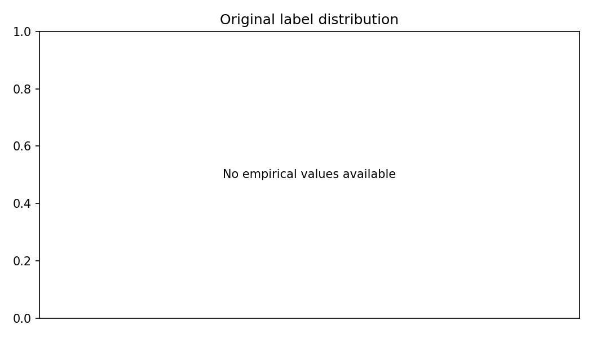
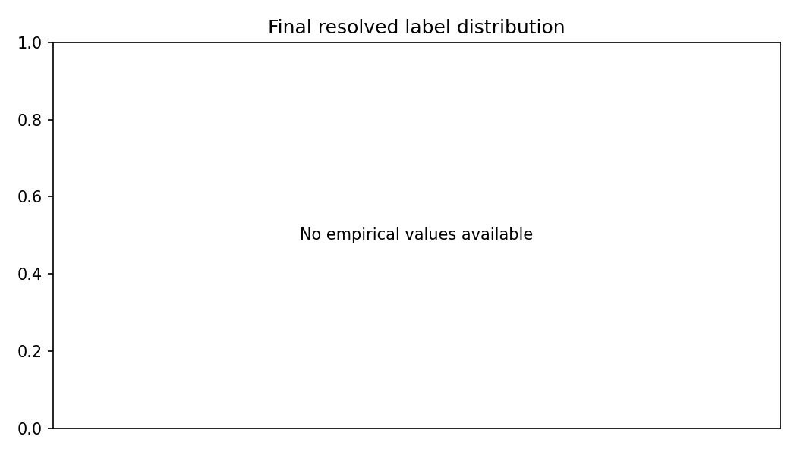

Dataset demo-synthetic-v1 · Guideline sentiment-v1
Run: demo-synthetic-v1-4d8846428c49 · SHA-256: 24ac271be12b41cee66dbf4b369b905e097c7760adb5f59e11a6652a175ba0d8| Input Rows | 6 |
|---|---|
| Valid Rows | 6 |
| Invalid Rows | 0 |
| Duplicate-Content Rows | 0 |
| Annotation Quality | Not computed |
| Eligible Annotation Pairs | Not computed |
| Raw Agreement | Not computed |
| Cohen'S Kappa | Not computed |
| Resolved Records | 0 |
| Unresolved Records | 6 |
| Excluded Records | 0 |
| Existing Label | 6 |
|---|
Classes without resolved training examples: ['Positive', 'Negative', 'Neutral']

